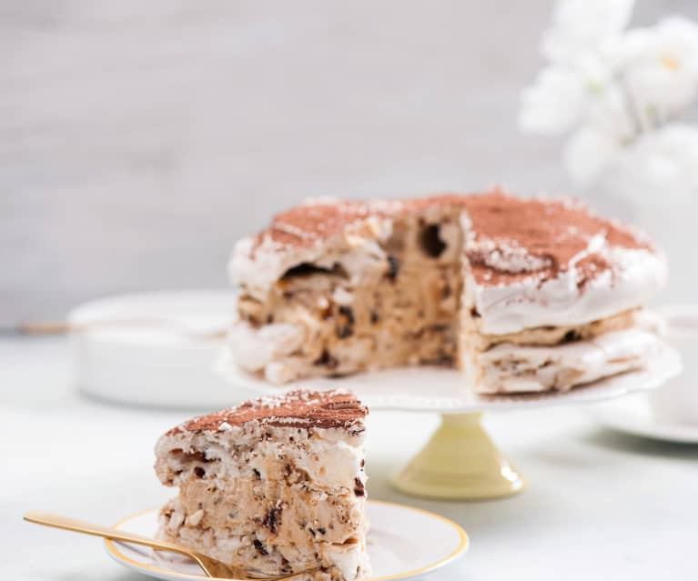

Tort Dacquoise

Ingredients:
- 6 białek (z jajek rozmiaru M), najlepiej o temperaturze pokojowej
- szczypta soli
- 300 g drobnego cukru
- 1 łyżeczka soku z cytryny lub octu winnego
- 1,5 łyżeczki skrobi ziemniaczanej
Steps:
- Dwie blachy do pieczenia wyłożyć papierem do pieczenia. Na każdym papierze narysować okrąg o średnicy 23 cm. Papier odwrócić na drugą stronę.
- Piekarnik nagrzać do temperatury 180°C (termoobieg).
- Przygotować blaty bezowe: Białka ubić ze szczyptą soli na sztywną pianę. Cały czas ubijając, dodawać stopniowo (po łyżce) cukier. Ubijać tak długo, aż cukier się rozpuści i piana będzie sztywna i lśniąca. Na końcu, dalej ubijając, dodać sok z cytryny i skrobię ziemniaczaną. Miksować jeszcze przez ok. 1 minutę.
- Ubitą pianę nałożyć na narysowane okręgi i delikatnie ją rozłożyć.
- Blachy wsunąć do piekarnika i od razu zr
- Przygotować krem krówkowy: Or
- Na paterze ułożyć jeden blat bezowy.